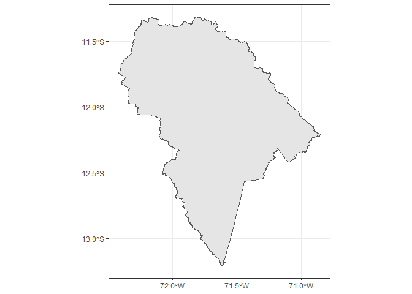

The geoperu package provides a convenient interface to access official spatial datasets of Peru directly from R. These data are collected from the National Institute of Statistics and Informatics (INEI) of Peru.
Installation
You can install the development version of geoperu as follows:
pak::pak("PaulESantos/geoperu")To access spatial information of districts from any province in Peru, you can use the get_geo_peru() function.
library(geoperu)
#> This is geoperu 0.0.0.2
cusco <- geoperu::get_geo_peru(geography = "CUSCO",
level = "dep",
simplified = FALSE)
cusco
#> Simple feature collection with 112 features and 4 fields
#> Geometry type: MULTIPOLYGON
#> Dimension: XY
#> Bounding box: xmin: -73.9811 ymin: -15.45829 xmax: -70.34507 ymax: -11.21229
#> Geodetic CRS: WGS 84
#> First 10 features:
#> departamento provincia distrito capital
#> 1 CUSCO ESPINAR PICHIGUA PICHIGUA
#> 2 CUSCO ESPINAR SUYCKUTAMBO SUYCKUTAMBO /5
#> 3 CUSCO ESPINAR PALLPATA HECTOR TEJADA
#> 4 CUSCO ESPINAR ESPINAR YAURI
#> 5 CUSCO QUISPICANCHI ANDAHUAYLILLAS ANDAHUAYLILLAS
#> 6 CUSCO CALCA LARES LARES
#> 7 CUSCO CHUMBIVILCAS LLUSCO LLUSCO
#> 8 CUSCO ESPINAR OCORURO OCORURO
#> 9 CUSCO CALCA CALCA CALCA
#> 10 CUSCO ACOMAYO MOSOC LLACTA MOSOC LLACTA
#> geom
#> 1 MULTIPOLYGON (((-71.18148 -...
#> 2 MULTIPOLYGON (((-71.51302 -...
#> 3 MULTIPOLYGON (((-70.97839 -...
#> 4 MULTIPOLYGON (((-71.36934 -...
#> 5 MULTIPOLYGON (((-71.6563 -1...
#> 6 MULTIPOLYGON (((-71.90762 -...
#> 7 MULTIPOLYGON (((-72.10355 -...
#> 8 MULTIPOLYGON (((-71.05453 -...
#> 9 MULTIPOLYGON (((-71.87228 -...
#> 10 MULTIPOLYGON (((-71.43954 -...
cusco_simplified <- geoperu::get_geo_peru(geography = "CUSCO",
level = "dep",
simplified = TRUE)
cusco_simplified
#> Simple feature collection with 1 feature and 1 field
#> Geometry type: POLYGON
#> Dimension: XY
#> Bounding box: xmin: -73.9811 ymin: -15.45829 xmax: -70.34507 ymax: -11.21229
#> Geodetic CRS: WGS 84
#> departamento geom
#> 1 CUSCO POLYGON ((-70.8315 -14.0698...
prov_sf <- geoperu::get_geo_peru(geography = "ANTA",
level = "prov",
simplified = TRUE)
prov_sf
#> Simple feature collection with 1 feature and 1 field
#> Geometry type: POLYGON
#> Dimension: XY
#> Bounding box: xmin: -72.77286 ymin: -13.71406 xmax: -72.00001 ymax: -13.28477
#> Geodetic CRS: WGS 84
#> provincia geom
#> 1 ANTA POLYGON ((-72.11767 -13.396...
islay_sf <- geoperu::get_geo_peru(geography = "ISLAY",
level = "prov",
simplified = FALSE)
islay_sf
#> Simple feature collection with 6 features and 5 fields
#> Geometry type: MULTIPOLYGON
#> Dimension: XY
#> Bounding box: xmin: -72.22384 ymin: -17.28501 xmax: -71.30225 ymax: -16.67504
#> Geodetic CRS: WGS 84
#> tag departamento provincia distrito capital
#> 1 arequipa_islay AREQUIPA ISLAY PUNTA DE BOMBON PUNTA DE BOMBON
#> 2 arequipa_islay AREQUIPA ISLAY MEJIA MEJIA
#> 3 arequipa_islay AREQUIPA ISLAY ISLAY ISLAY (MATARANI)
#> 4 arequipa_islay AREQUIPA ISLAY COCACHACRA COCACHACRA
#> 5 arequipa_islay AREQUIPA ISLAY DEAN VALDIVIA LA CURVA
#> 6 arequipa_islay AREQUIPA ISLAY MOLLENDO MOLLENDO
#> geom
#> 1 MULTIPOLYGON (((-71.44018 -...
#> 2 MULTIPOLYGON (((-71.8306 -1...
#> 3 MULTIPOLYGON (((-71.99808 -...
#> 4 MULTIPOLYGON (((-71.48244 -...
#> 5 MULTIPOLYGON (((-71.76488 -...
#> 6 MULTIPOLYGON (((-71.66772 -...To visualize the retrieved geospatial information with the get_geo_peru() function from the geoperu package, you can use various tools in R. A common option is to use the ggplot2 library along with sf object visualization functionality.
Here’s a basic example of how to visualize the data:
library(patchwork)
library(ggplot2)
plot1 <- cusco |>
ggplot() +
geom_sf() +
theme_bw()
plot2 <- cusco_simplified |>
ggplot() +
geom_sf() +
theme_bw()
plot1 + plot2
geoperu also provides access to spatial information of natural protected areas in Peru. These areas, managed and declared by the National Service of Natural Protected Areas (SERNAP), encompass a diverse range of ecosystems. The get_anp_peru() function allows users to download spatial data representing these protected areas directly into their R environment.
manu <- get_anp_peru(anp = "manu")
manu
#> Simple feature collection with 1 feature and 4 fields
#> Geometry type: POLYGON
#> Dimension: XY
#> Bounding box: xmin: -72.41719 ymin: -13.2059 xmax: -70.85217 ymax: -11.31585
#> Geodetic CRS: WGS 84
#> anp_cate anp_nombre anp_sect anp_ubpo
#> 1 Parque Nacional Manu <NA> Cusco y Madre de Dios
#> geom
#> 1 POLYGON ((-71.36212 -11.656...
manu |>
ggplot() +
geom_sf() +
theme_bw()
You can customize the plot by adding additional layers, adjusting styles, and adding labels according to your specific needs.